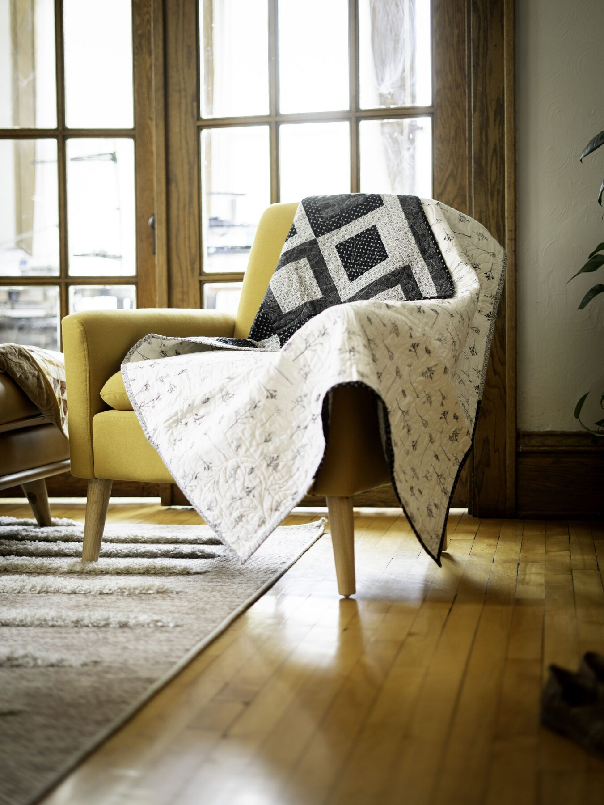
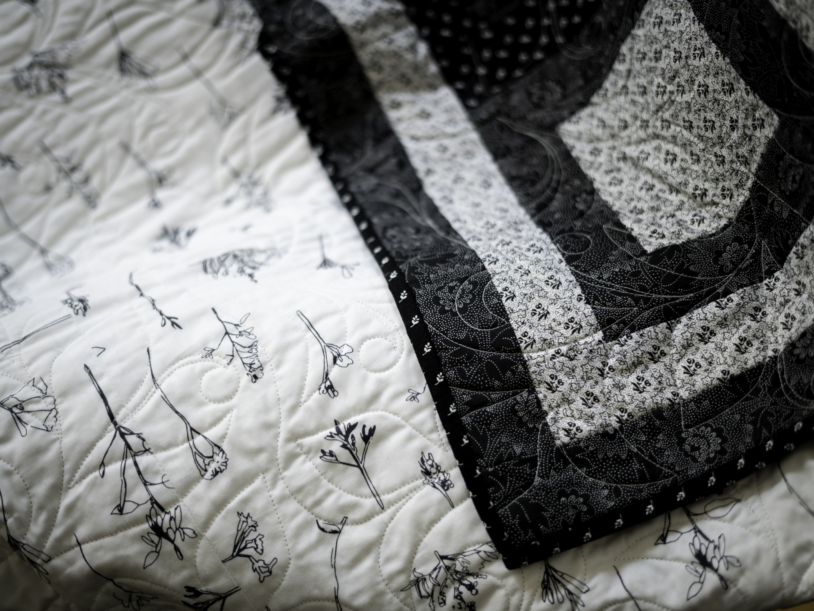
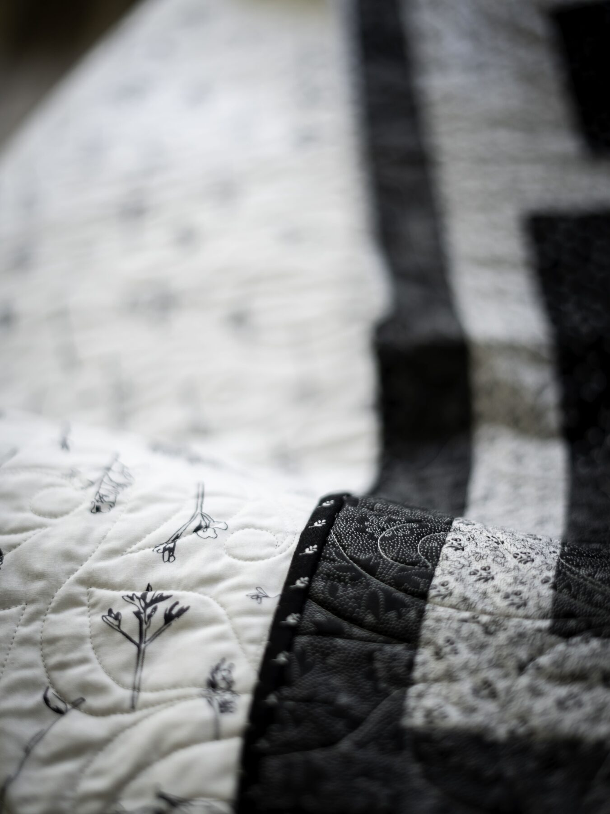
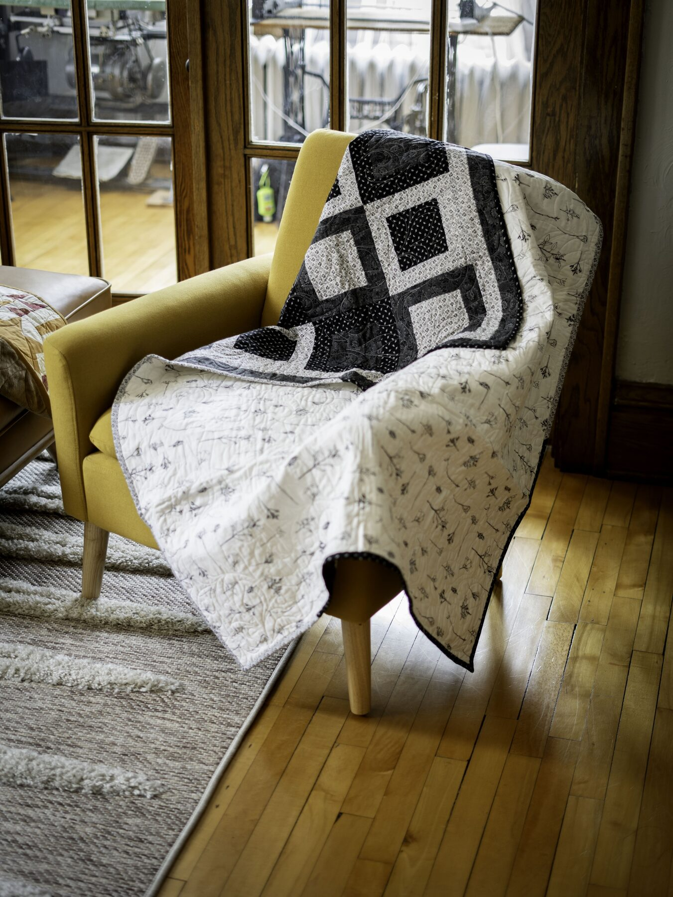

Black and White Window
A graphic mix of black, white, and soft gray gives this quilt a clean, modern feel. Delicate botanical details soften the bold geometric design.
- Size
- 43 × 57 inches
- Material
- 100% Premium cotton
- Availability
- Ready to ship